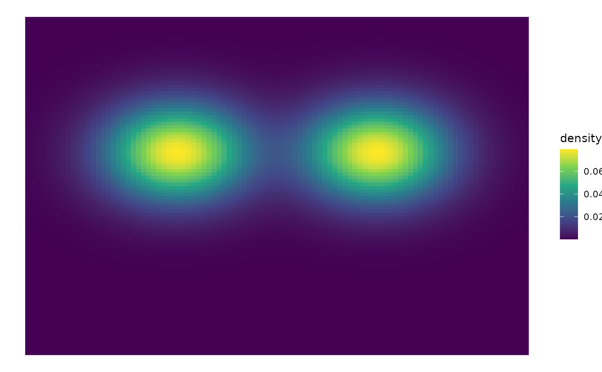

Plots a 2D map of the density of a distribution. If plot = FALSE, returns a dataframe with the density for each cell in the grid
plot_2d_density(
start,
size,
cellsPerRow = 50,
names = NULL,
params = NULL,
weights = NULL,
customDensity = NULL,
plot = TRUE
)Vector c(x, y) with the coordinates of the bottom-left corner of the map.
Distance covered by the map. In other words, the top-right corner of the map has coordinates c(x + size, y + size)
Number of cells to plot in every row. The higher, the more resolution
Name of the distribution from which to sample from.
Distribution parameters.
Distribution weights (if it's a mix of distributions)
Instead of providing names, params and weights, the user may prefer to provide a custom density function.
Whether to return a plot or a dataframe with the density in each coordinate
Density Plot or dataframe
# plot supported distribution
plot_2d_density(
c(-5, -5), 10, cellsPerRow = 100, names = c("mvnorm", "mvnorm"),
params = list(list(c(-2,1), diag(2)), list(c(2,1), diag(2)))
)
#> Equal weights given to all distributions

# plot custom distribution
customDensity_r <- function(x){
if (x[1] > 0 && x[1] < 3 && x[2] < 0 && x[2] > -3){
return (1)
} else {
return (0)
}
}
plot_2d_density(start = c(0,-4), size = 5, customDensity = customDensity_r)